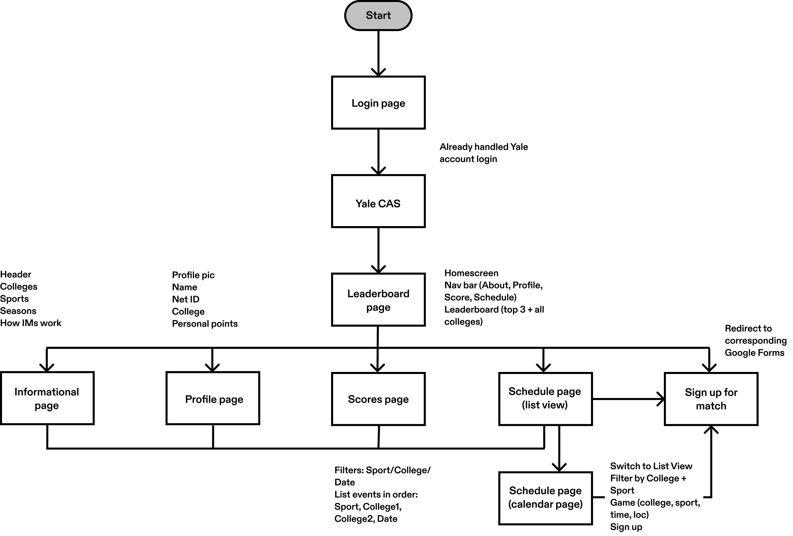
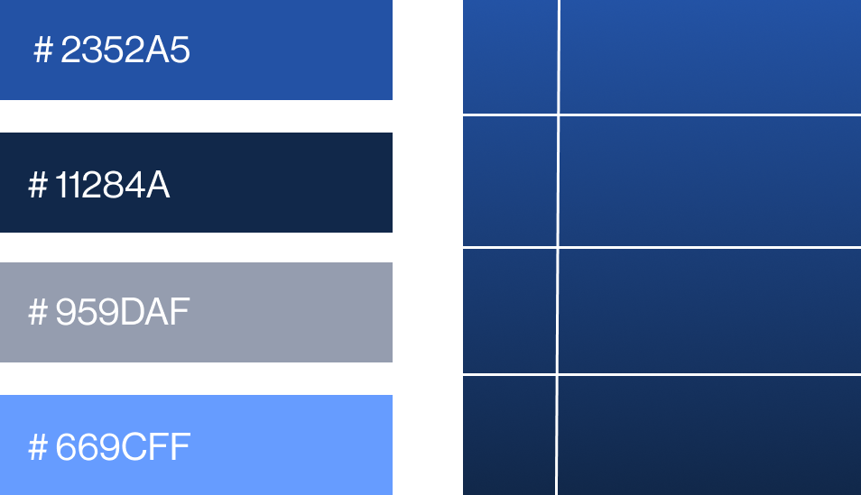

yale intramural
website design
2024OVERVIEW |  Our team was tasked with designing a website to serve as a central hub for Yale Intramural participants, providing easy access to schedules, scores, and standings while reflecting the competitive nature of IMs.
| ||||
PROBLEM | How can we make IMs information intuitive and accessible?The existing IM information system relied solely on multiple spreadsheets that were visually cluttered and hard to navigate:
Real messages from my college’s IMs groupchat The challenge was to design an accessible and visually engaging website. | ||||
RESEARCH | We conducted initial meetings with Yale Computer Society (YCS) and active IMS participants to understand pain points and requirements: Key Insights:
| ||||
IDEATION |  Preliminary user flow chart with corresponding basic components for each page We began by identifying core pages and designing user flow, keeping in mind a streamlined interface. Upon visiting the website, the user must pass through a login page and API to sign into their Yale account in order to access the actual website. There, they start at the home/leaderboard page, which gives them access to all other pages through the upper navigation bar. | ||||
PROCESS | Visual Direction:  We chose a blue and white color scheme inspired by Yale’s identity, balancing boldness with clarity to reflect the competitive, sporty vibe of IMs. A grid system was used to create a clean, structured layout, subtly inspired by analog scoreboards for a nostalgic yet modern design. JetBrains Mono is a font designed for developers and coding environments and was used to contribute to the analog-scoreboard-videogame aesthetic. The font's clarity and modern design ensured readability while enforcing the competitive atmosphere of IMs. Wireframes:  Low-fidelity wireframes We created low-fidelity wireframes to refine layouts and functionality:
| ||||
IMPLEMENTATION | After finalizing the prototypes, we collaborated with YCS to hand off designs for development. They hope to deploy the website by January 2025. | ||||
REFLECTION | Impact:
Lessons Learned: Through this project, I developed further skills in effective communication and working jointly with a client. Additionally, the iterative design process taught me the value of ongoing improvements and adjustments based on user feedback. Working closely with a team reinforced the significance of collaboration and leveraging each member's interests/expertise to make the best product. Impact:
| ||||
PRODUCT |     |